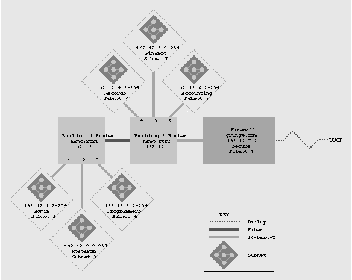
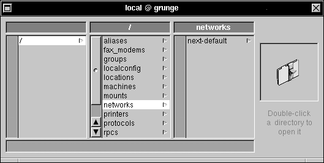
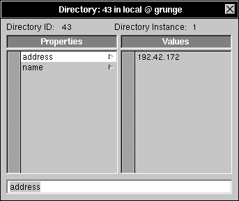
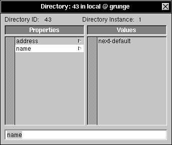

Figure 4: Sample output from snmpnetstat
NEXTSTEP In Focus, Fall 1993 (Volume 3, Issue 4).
Copyright ©1993 by NeXT Computer, Inc. All Rights Reserved.
Advanced Networking Tools
Dan Peknik
In managing a large Ethernet network, you need to assess your network's performance and understand how it affects servers and clients. Several programs based on NEXTSTEP's system administration tools can help you collect diagnostic data. You can also use third-party tools to design and manage networks effectively.
Dealing with unplanned growth
A network can grow in many ways. For instance, if a department in your organization expands into several departments, you might use routers, concentrators, and more servers to add computers. If your network has grown without much planning, how well is it running? What are the major sources of network traffic, and are they impeding performance? How does the network's structure affect both users and hardware?
Fortunately, several network administration tools are at your disposal to help you answer these questions and plan future network expansion. NEXTSTEP provides a set of software tools to help you diagnose networking pitfalls. Many third-party products on the market can provide more detail.
Map out what's where
A great way to start understanding your network is to map it out accurately. When you have a graphical view of the physical topology of your network and a history of the changes you've made, you'll find it easier to track and plan network expansion.
Some network management systems can automatically diagram the network for you. However, you can make a map of your network with anything from pencil and paper to a complicated illustration application--the most effective tool is the one you find easiest to use. Figure 1 shows an example of a high-level network topology diagram.

Figure 1: A network topology diagram for a typical company, Grunge Inc.
If your network is very complex, use several diagrams. For example, Grunge Inc. could use additional diagrams to show the topology of each subnet.
In your diagram, include all the meaningful, accurate reference information about the network that you can think of. The more complete the diagram, the easier it is to trace and correct problems.
For example, label routers and important cable segments and indicate their types, such as fiber or twisted pair. Use line style or color to indicate cable type. If a cable splits, show what device splits it--include its name, so you can query it remotely. You might even highlight hardware that's not connected to an uninterruptable power source (UPS) to note problem areas in the event of power failure. Most important, include a key that says what the symbols and colors mean, so that later you or someone else can easily understand the diagram.
If you're not sure whether to include a piece of information, throw it in just in case. You can decide over time which information is unnecessary. Better to have too much information than too little, especially when you have to fix the network fast!
Detect congestion
Packet collisions can be a major cause of network inefficiency. A collision occurs when two or more computers on the network try to transmit data at the same time. The packets collide and become deformed, losing headers, destination addresses, and the data they were meant to carry.
Because collisions are a normal part of Ethernet operations, controllers are designed to handle them properly. When a network interface detects a collision, it waits for activity on the network to stop and then tries to retransmit its data. It uses a "binary exponential back-off" policy, which works something like this: If a network interface detects a collision, it waits a random amount of time and tries to retransmit. If collisions continue, it repeats waiting a random amount of time and retrying the transmission. The algorithm it uses to choose the wait time ensures that on average, the delay time doubles with each retry attempt. This is a very effective method of handling collisions.
A correctly engineered network shouldn't have enough collisions to degrade network performance. However, when a network is overloaded with traffic or when it contains improperly configured systems, lots of collisions can result, causing a network "traffic jam."
Measuring collisions with netstat
One way to monitor collisions is to use the netstat command. netstat has several parameters to isolate different types of network traffic.
See the netstat UNIX manual page for a list of all the parameters you can use.
Figure 2 shows an example of netstat output for all interfaces on the computer grunge. The -i option shows statistics on all interfaces that were automatically configured at boot time.
grunge> netstat -i
Name Mtu Network Address Ipkts Ierrs Opkts Oerrs Coll
en0 1500 mynet grunge 6976827 0 8133029 0 0
lo0 1536 loopback localhost 318631 0 318631 0 0
en0 1500 none none 7023624 217 8133029 0 74821
Figure 2: Sample output from netstat -i
The statistics displayed by netstat -i are these:
| n | Name The name of the Ethernet interface. For example, en0 is the physical Ethernet adapter in your computer. lo0 is the loopback interface--the reserved loopback address is 127.0.0.1. |
| n | MTU The maximum transmission unit, which is the fixed upper limit on the amount of data that can be transferred in one physical frame. The MTU for Ethernet is 1500. |
| n | Network The logical name of the network the interface connects to. The name comes from the /networks NetInfo property. |
| n | Ipkts The number of packets received on this interface. |
| n | Ierrs The number of errors that occurred as packets entered this interface. |
| n | Opkts The number of packets sent out from this interface. |
| n | Oerrs The number of errors that occurred as packets left this interface. |
| n | Coll The number of collisions that have occurred on this interface. |
A simple test is to check the Coll value of the last Ethernet interface. It should be less than about ten percent of the total number of packets--in the example, the collision rate is well within tolerance. While this is a good quick-and-dirty test for problems, it's just a statistic--you'll need to collect more data to pinpoint exact problems. For instance, if Opkts is very small, you can't rely on the collision count to give an accurate picture of performance. Use other tools to collect data to support the values you find with netstat.
To gather more information, run netstat -i at various times of day to see if your network has higher collision rates at specific times. Focus on the peak times and match them to specific occurrences, like everyone logging in first thing in the morning or many people running some application right after lunch. Also collect more information from other computers, both clients and servers, for comparison and greater depth of data.
Study the average of the numbers--if the average number of collisions is high, some reorganization via routers and subnets may help, or perhaps further investigation is needed.
Keep in mind too that using long cables can increase the likelihood of collisions. Use shorter Ethernet segments so that the network can handle increased traffic before collisions become a problem.
Counting connections
Another way to check network load and performance is to run netstat without options and count the number of protocol connections. Figure 3 shows an example.
grunge> netstat
Active Internet connections
Proto Recv-Q Send-Q Local Address Foreign Address (state)
tcp 0 0 grunge.2866 server.2453 ESTABLISHED
tcp 0 0 grunge.688 grunge.736 ESTABLISHED
tcp 0 0 grunge.736 grunge.688 ESTABLISHED
tcp 0 0 grunge.688 grunge.719 ESTABLISHED
tcp 0 0 grunge.719 grunge.688 ESTABLISHED
tcp 0 0 grunge.716 server.714 ESTABLISHED
tcp 0 0 grunge.709 server.715 ESTABLISHED
tcp 0 0 grunge.688 grunge.707 ESTABLISHED
tcp 0 0 grunge.707 grunge.688 ESTABLISHED
tcp 0 0 grunge.704 server.714 ESTABLISHED
tcp 0 32 grunge.688 grunge.702 ESTABLISHED
tcp 0 0 grunge.702 grunge.688 ESTABLISHED
udp 0 0 localhost.ntp *.*
udp 0 0 grunge.ntp *.*
Figure 3: Sample output from netstat
The Send-Q column shows the number of entries waiting to be sent out. By checking the numbers in the Send-Q column, you can see whether the network is too congested. This number should be 0 for most of the connections when things are running smoothly. If it's higher than 0 for several connections, you might have too much traffic on the network.
Monitoring remotely
There's another special tool--snmpnetstat--for monitoring and diagnosing congestion and performance remotely, to make network administration easier. snmpnetstat is designed to run with Simple Network Management Protocol (SNMP) which is included with NEXTSTEP since Release 3.0. SNMP is a combination of host daemons and programs that can remotely and continuously monitor many network and system functions.
To find out how to install SNMP, see the NEXTSTEP Network and System Administration book.
For a NEXTSTEP interface to many SNMP queries, check out NetWatchTM, a set of applications based on SNMP from RidgeBack Solutions, Inc.
To monitor performance on a remote computer without snmpnetstat, you log in with telnet or rsh and then run netstat. With snmpnetstat you can query the host remotely. snmpnetstat continues collecting statistics until you stop it. For instance, you can remotely invoke the SNMP daemon on grunge and then monitor grunge for collisions and bad packets.
Figure 4 shows statistics on interface en0 on host grunge, collected at two-second intervals. You can use snmpnetstat to constantly monitor a host's performance, particularly to diagnose problems that are intermittent and therefore hard to catch. You can also use SNMP to make protocol-specific inquiries on a specified computer, as in Figure 5.
client> snmpnetstat -I en0 grunge 2
 input (en0) output input (Total) output
input (en0) output input (Total) output
 packets errs packets errs colls packets errs packets errs colls
packets errs packets errs colls packets errs packets errs colls
 206083 0 137452 2 0 618097 0 498223 2 0
206083 0 137452 2 0 618097 0 498223 2 0
 0 0 0 0 36 36 0 0
0 0 0 0 36 36 0 0
 11 0 9 0 0 57 0 53 0 0
11 0 9 0 0 57 0 53 0 0
 0 0 0 0 0 51 0 52 0 0
0 0 0 0 0 51 0 52 0 0
 2 0 1 0 0 40 0 38 0 0
2 0 1 0 0 40 0 38 0 0
 11 0 8 0 0 72 0 67 0 0
11 0 8 0 0 72 0 67 0 0
 0 0 1 0 0 38 0 39 0 0
0 0 1 0 0 38 0 39 0 0
 10 0 8 0 0 71 0 68 0 0
10 0 8 0 0 71 0 68 0 0
 2 0 1 0 0 41 0 39 0 0
2 0 1 0 0 41 0 39 0 0
 5 0 1 0 0 46 0 38 0 0
5 0 1 0 0 46 0 38 0 0
 11 0 10 0 0 73 0 71 0 0
11 0 10 0 0 73 0 71 0 0
 1 0 1 0 0 38 0 38 0 0
1 0 1 0 0 38 0 38 0 0
 0 0 0 0 0 36 0 36 0 0
0 0 0 0 0 36 0 36 0 0
 ...
...
Figure 4: Sample output from snmpnetstat
client1> snmp grunge
snmp> ip-status
The SNMP entity is acting as a host.
The default time-to-live for IP packets is 60 msec.
Datagrams received: 407020, forwarded: 0, consumed: 407024
 format errors: 0, misdeliveries: 0, resource limitations: 0
format errors: 0, misdeliveries: 0, resource limitations: 0
 destined for unknown protocols: 0
destined for unknown protocols: 0
Datagrams req'd for transmission: 0, discarded due to no route: 0
Timeout value for reassembly queue: 60
Fragments created: 0, Fragments received needing reassembly: 12344
Datagrams successfully reassembled: 12344, successfully fragmented: 0
Datagrams needing fragmentation (but the IP flags field said not to): 0
snmp> tcp-status
The retransmission algorithm is vanj.
Min/max retransmission times are: 1000/64000 (msecs)
Max # of simultaneous TCP connections allowed: -1
Number of active opens: 358, passive opens: 266, current open connections: 21
Failed connection attempts: 0, connection resets: 0
Number of segents received: 144189, sent: 143194, retransmitted: 14
Figure 5: Making an SMNP protocol query
The first query in the example in Figure 5 asks grunge for its IP statistics. These statistics include important information on network fragmentation and general protocol errors. The second query requests TCP statistics, such as the number of failed connection attempts.
UDP statistics aren't currently enabled in NEXTSTEP, so the SNMP command udp-status doesn't work.
Check out file system performance
The Network File System (NFS) protocol suite can account for a major part of network traffic. Computers use NFS to mount file systems from one computer to another. Copying and moving files, for example, are handled by NFS. Because NFS is usually very heavily used, its performance has a big effect on overall network performance.
One way to find NFS performance problems is to look at individual clients that import directories, and isolate any that are dropping packets or are being overloaded. In Figure 6, nfsstat shows the NFS statistics for client1. nfsstat -c reports statistics about NFS requests that this system created.
client1> nfsstat -c
Client rpc:
calls badcalls retrans badxid timeout wait newcred
4267683 54 529 2 582 0 0
Figure 6: Sample output from nfsstat -c
The statistics displayed are:
| n | calls Number of RPC calls initiated |
| n | badcalls Number of calls rejected |
| n | retrans Number of times a call was resent |
| n | badxid Number of packets that lost data |
| n | timeout Number of times a call timed out |
| n | wait Number of times a call had to wait on a busy client handle |
| n | newcred Number of times authentication information had to be refreshed |
The most important values are those for retrans, badxid, and calls. The retrans field (here a client RPC value) indicates the number of RPC requests the client had to retransmit while reading or writing files using NFS. If the number of retransmissions is larger than five percent, then the interface has needed to repeat RPC requests from a server a relatively high percentage of the time, and may be in trouble. If retrans is large and badxid and time-out are roughly equal, then one or more of your computers is dropping packets. This means it's too bogged down to handle all incoming requests and is refusing client RPC requests.
Because this data comes from the client RPC, it represents the NFS server's load more than the network hardware's load. To measure possible network problems with netstat -c, see if retrans is high and badxid is relatively close to zero. If so, retransmissions might be caused not by server slowness but by network data corruption. You'll need to use a network analyzer (see the next section) to look at the original network packets and check for data corruption.
To learn more about NFS, see the NEXTSTEP Network and System Administration book.
To find out how to tune NFS, see "NFS Performance Tuning" in this issue.
Go looking for trouble
An effective all-purpose networking tool is a network analyzer, usually a portable computer equipped with a special Ethernet adapter and software for network monitoring. You can connect it to the network at critical locations to test everything from the packets traversing two computers to the total statistics of an entire network. Figure 7 shows statistics from a Network General Sniffer.
With a network analyzer you can collect data to find peak network load and possible weaknesses in design. In addition to a complete suite of scripts and statistics, network analyzers can generate heavy network traffic on demand for testing, and also isolate and study the form and function of any message that traverses the net! While a network analyzer is a large investment, it's invaluable in solving problems and understanding the true nature of networking.
 Network History
Network History
 This report provides the error history for a specified length
This report provides the error history for a specified length
 of time.
of time.
 Monitoring Started: Aug 30 14:27:39 Total Stations: 49
Monitoring Started: Aug 30 14:27:39 Total Stations: 49
 Monitoring Stopped: Aug 30 14:27:59
Monitoring Stopped: Aug 30 14:27:59
 Elapsed Time: 0 day(s) 00:00:20
Elapsed Time: 0 day(s) 00:00:20
-----------------------------------------------------------------------------
 Date Frames Errs Bytes Size % Abs
Date Frames Errs Bytes Size % Abs
-----------------------------------------------------------------------------
"Aug 30 14:58:55", 135, 0, 34350, 254, 0.60
"Aug 30 14:59:00", 490, 0, 154508, 315, 2.66
"Aug 30 14:59:05", 166, 0, 68322, 411, 1.15
"Aug 30 14:59:10", 79, 0, 20345, 257, 0.35
"Aug 30 14:59:15", 355, 0, 228762, 644, 3.79
"Aug 30 14:59:20", 423, 0, 160453, 379, 2.72
"Aug 30 14:59:25", 465, 0, 195115, 419, 3.30
"Aug 30 14:59:30", 332, 0, 87987, 265, 1.53
"Aug 30 14:59:35", 216, 0, 55464, 256, 0.97
"Aug 30 14:59:40", 628, 0, 100432, 159, 1.84
"Aug 30 15:01:25", 171, 0, 65936, 385, 1.12
"Aug 30 15:01:30", 493, 0, 342028, 693, 5.66
"Aug 30 15:01:35", 255, 0, 65768, 257, 1.15
"Aug 30 15:01:40", 159, 0, 36553, 229, 0.64
"Aug 30 15:01:45", 1305, 0, 270150, 207, 4.82
"Aug 30 15:01:50", 1953, 0, 458085, 234, 8.07
"Aug 30 15:01:55", 1058, 1, 222309, 210, 3.96
"Aug 30 15:02:00", 832, 0, 147970, 177, 2.68
"Aug 30 15:02:05", 400, 0, 162994, 407, 2.76
"Aug 30 15:02:10", 996, 0, 506630, 508, 8.48
"Aug 30 15:02:15", 740, 0, 647642, 875, 10.64
Figure 7: Sample output from a network analyzer
Improve network performance
To maintain performance as your network grows, you may need to partition it into smaller segments that isolate traffic. Partitioning a network separates it into sections and allows you to optimize the performance of each section--divide and conquer! For example, you can isolate groups of computers that are high traffic systems from other groups.
There are two basic ways to partition a network: Bridging and routing. You can choose one or the other, or use a combination.
Bridging
You can use a bridge to connect two or more Local Area Network (LAN) segments. Bridges use Ethernet addresses to determine where to send packets. Adaptive or "learning" bridges can automatically tell where a packet is being sent, where it should be forwarded, and what's the best path for it to follow. They use a combination of hardware and software to study your network and make accurate decisions based on packet source information.
Bridges tend to be "plug-and-play" solutions. Because they operate independently of the higher level protocols used on your network, they have a small performance cost. The disadvantage of using bridges is that they provide less traffic isolation than a router.
For instance, when a packet is broadcast, a bridge usually passes the broadcast message to all segments of the network. You can configure some bridges to disable forwarding broadcast traffic, but doing so also prevents some related network operations between computers on opposite sides of the bridge. In contrast, a router can safely isolate broadcasts to specific segments. If broadcast traffic is a major part of your network, then maybe a bridge won't help.
Bridges are often used in smaller networks, and many vendors now package multiport bridges into 10-base-T hubs, called "switching hubs." Bridges can also increase throughput of individual subnets that use routers.
Routing
Alternatively, you can use routers to split a large network into sections, or subnets. A router uses the network address (IP address) in the packet to determine which subnet to forward a packet to. Some routers can even collect diagnostic data.
To find out how to create subnets, see the NEXTSTEP Network and System Administration book.
Routers take more time to configure than bridges, because they have lots of configuration options. For example, you can configure
a router to lock out certain types of network protocols and traffic, for security or optimization. Routers are also better able to isolate broadcast traffic than bridges and are therefore more effective in insulating traffic between subnets. And they can connect LANs that are of different types, like FDDI and Ethernet. Furthermore, to connect a network to the Internet you must use a router. They're suited for connecting Wide Area Networks (WANs) over great distances with leased lines or even public data services.
Unlike bridges, which don't care what protocols they're transporting, routers need specific software for each protocol they route. You need to be sure that the router you choose supports the protocols you need. When you compare performance claims from different router vendors, be sure that the numbers refer to the protocols you'll use. One model of router may be the fastest at handling routing of IPX--Novell's networking protocol--while a different model may be the best at handling the IP protocol--native to NEXTSTEP.
Strengthening signals with repeaters
Some network problems, particularly intermittent problems, are caused by using network cabling that's too long, so that signal strength is weak. You can use a repeater to enhance and even correct a network's signal strength.
The advantage of a repeater is that it's a low-cost way to extend an Ethernet network. The disadvantage is that in the same way that a repeater enhances good signals, it enhances bad ones, too! Therefore, test how well repeaters work in your network before buying them.
Both bridges and repeaters can extend a network, but in different ways. Here are some trade-offs to consider in choosing which to use:
| n | Repeaters are less expensive. |
| n | Repeaters can extend a network only so far; bridges can extend it an arbitrary distance. |
| n | Both bridges and repeaters can regenerate electrical signals and remove noise from moderately degraded signals. |
| n | Bridges won't transmit packets that are too damaged to fix, while repeaters will transmit corrupted data. |
| n | Repeaters don't enhance throughput of a network; they simply extend its length somewhat. A bridge can partially improve network performance. |
| n | A packet can traverse a repeater faster than it can a bridge. So if the traffic on the network is light enough that few collisions occur, a repeater provides better performance. |
Conclusions
As your network grows more complex, you need specialized tools to analyze it. Hopefully, this article has given you sufficient information about studying your network. A future article will explore more administrative tools.
Reading about and hacking on your network can be both educational and intriguing. Here are my personal choices of several excellent reference books:
| n | Comer, Douglas E. Internetworking with TCP/IP. Englewood Cliffs, NJ: Prentice Hall, 1991. ISBN 0-13-468505-9. |
| n | Managing NFS and NIS. Sebastopol, CA: O'Reilly and Associates, 1991. ISBN 0-937175-75-7. |
| n | System Performance Tuning. Sebastopol, CA: O'Reilly and Associates, 1991. ISBN 0-937175-60-9. |
| n | Miller, Mark. Troubleshooting TCP/IP Analyzing the Protocols of the Internet. San Mateo, CA: M & T Books, 1992. ISBN 1-55851-268-3. |
| n | NeXT Computer, Inc. NEXTSTEP Network and System Administration. Menlo Park, CA: Addison Wesley, 1992. ISBN 0-201-63254-3. n |
Dan Peknik is a System and Network Support Engineer in the Customer Support Team. You can reach him by e-mail at Dan_Peknik@next.com.
The NetInfo networks property
When you run netstat with the -i option, among the information displayed is the name of each computer's subnet, if the subnet has a name in NetInfo. An appropriate name is usually easier to remember and work with than a network address, particularly if you have many subnets. So, it's a good idea to create a networks directory in NetInfo and give each subnet a name.
For example, the default subnet number that comes with a NEXTSTEP system is 192.42.172 and its name is next-default.

Each new NEXTSTEP system has the next-default subnet built in.
The address property of next-default contains the subnet number for the network:

Each subnet has a unique number within the network.
The name property contains the name, which is what netstat -i displays:

You can choose any subnet name.
When you run netstat -i, any computer in the 192.42.172 subnet has the name next-default in the Network column. (For example, see Figure 2 in the main article.)
So the subnet name makes it easier to figure out which subnet a computer is in.-DP